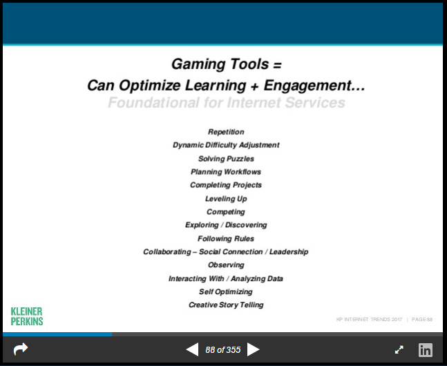
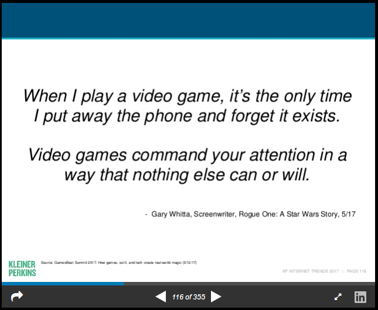
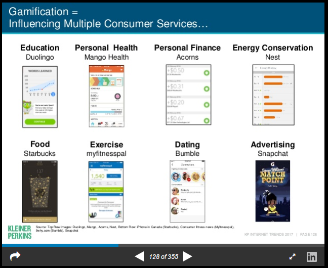
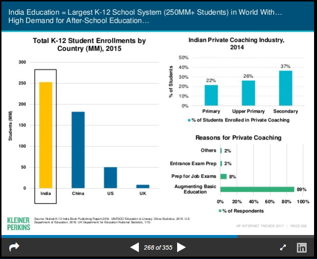
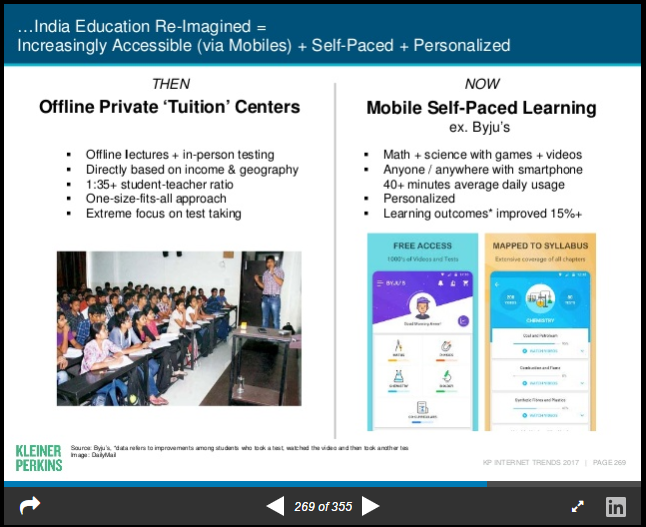
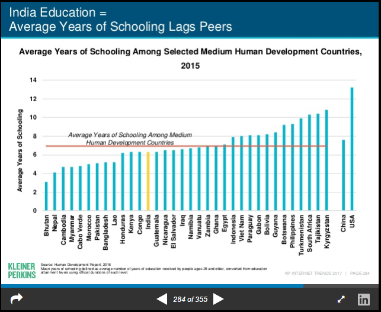

name: inverse layout: true class: center, middle, inverse --- #KPCB Internet Trends 2017 **Hightlights on Education** <br> <br> Tiago Maluta .footnote[Access the full [report](https://www.slideshare.net/kleinerperkins/internet-trends-2017-report)] --- layout: false .left-column[ ### Notes ] .right-column[ Each year Kleiner Perkins Caufield & Byers releases an insight report for internet trends. The presentation .red[*] covers a lot of areas and - of course - some highlights on education. Here are my notes on what I found particularly interesting View are always my own .footnote[.red[*] disclaimer [notes](https://www.slideshare.net/kleinerperkins/internet-trends-2017-report/355)] ] --- layout: false .center[] --- layout: false .center[] --- layout: false .center[] --- layout: false .center[] --- layout: false .center[] --- layout: false .center[] --- name: last-page template: inverse ## Thanks For more informations check [@maluta](http://www.twitter.com/maluta) on Twitter